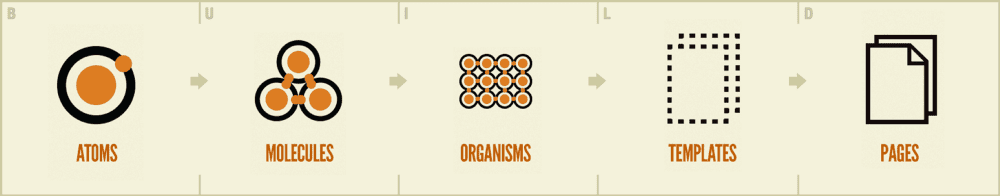
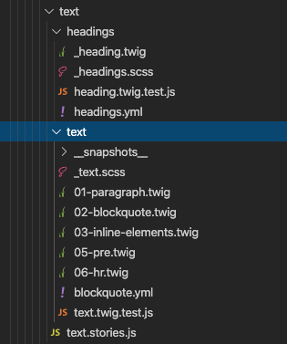

The five distinct levels of atomic design — atoms > molecules > organisms > templates > pages — map incredibly well to React’s component-based architecture.
Credit: Pattern Lab
Basic building blocks of matter, such as a button, input or a form label. They’re not useful on their own.
Grouping atoms together, such as combining a button, input and form label to build functionality.
Combining molecules together to form organisms that make up a distinct section of an interface (i.e. navigation bar)
Consisting mostly of groups of organisms to form a page — where clients can see a final design in place.
An ecosystem that views different template renders. We can create multiple ecosystems into a single environment — the application.
Since React also follows a component-based architecture, it’s pretty common to organise your components based on the type, rather than feature. What if we built a sub-ecosystem for each component feature?
Each component or service has its own isolated environment — everything needed to work on its own instance. You can see that each component /heading & /text has its own set of styles, actions, and unit or integration tests that act like an independent piece of feature in your app. (You can also add its own set of images and other local variables.) This makes it much easier, and reduces your efforts, to test your code consistently and effectively.
Require emulsify in your project composer require emulsify-ds/emulsify-drupal
Move into the contrib Emulsify theme directorycd web/themes/contrib/emulsify-drupal
Create your new custom theme by cloning emulsify php emulsify.php "THEME NAME" (Run php emulsify.php -h for other available options)
Move into your new custom theme directory cd ../../custom/THEME_NAME/
Install the theme dependencies yarn or npm install
Build theme yarn build
Enable your theme and its dependencies*drush then THEME_NAME -y && drush en components emulsify_twig -y
Set your custom theme to be the default drush config-set system.theme default THEME_NAME -y
* drush then is the correct command for Drush versions >= 9. drush en is the command to use for Drush versions <= 8.
Written By: Gaurav Mahlawat , Kunal Kapoor